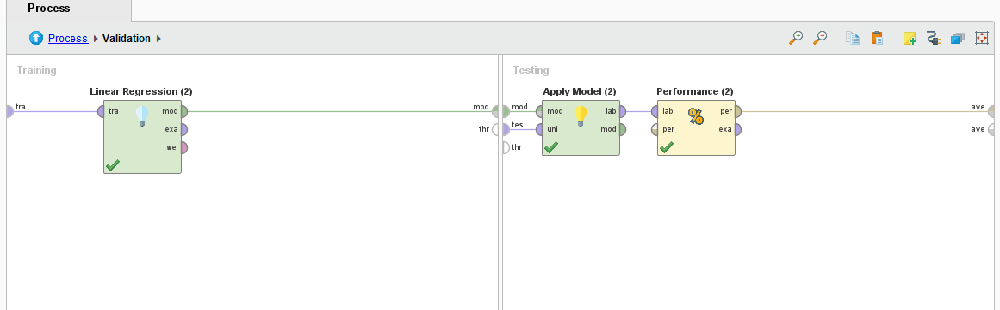
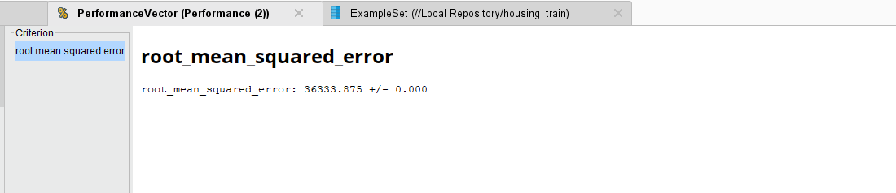

El dataset de viviendas es un conjunto de datos ampliamente utilizado en el campo del
aprendizaje automático y la minería de datos. Este conjunto de datos generalmente se utiliza
para tareas de regresión, en las que el objetivo es predecir el precio de una vivienda en
función de diversas características o atributos.
Las características comunes incluyen datos como el número de habitaciones, el tamaño del lote,
la ubicación geográfica, la antigüedad de la vivienda, la proximidad a servicios y otros
factores que pueden influir en el precio de una vivienda. El objetivo principal es desarrollar
un modelo predictivo que pueda estimar con precisión el precio de una vivienda en función de
estas características.
El dataset de viviendas se ha convertido en un conjunto de datos de referencia en el aprendizaje
automático y se utiliza para enseñar y practicar técnicas de regresión y análisis de datos. Es
una herramienta valiosa para comprender cómo se pueden aplicar algoritmos de aprendizaje
automático para abordar problemas del mundo real, como la valoración de viviendas.
El tipo de problema que se aborda en este dataset de viviendas (housing dataset) es un problema de regresión. En un problema de regresión, el objetivo principal es predecir un valor numérico (en este caso, el precio de una vivienda) en función de un conjunto de atributos o características.
Realizar un análisis de los atributos es de vital importancia por varias razones. En primer
lugar, permite comprender mejor la naturaleza de los datos y comprender a fondo la estructura y
el contenido de los mismos.
Esto incluye conocer la naturaleza de las variables, su distribución, relaciones entre atributos
y la presencia de valores atípicos o datos faltantes. Este conocimiento es esencial para tomar
decisiones informadas y
seleccionar las técnicas de análisis adecuadas.
En segundo lugar, es fundamental para identificar patrones y tendenncias que se puedan encontrar
en los datos. Esto puede revelar información valiosa que ayuda en la toma de decisiones y en la
generación de conocimientos.
Este análisis permite limpiar y preprocesar los datos, abordar valores atípicos, datos faltantes
y problemas de calidad de datos. La preparación adecuada de datos es esencial para el
rendimiento de los modelos de Machine Learning.
A través del análisis de datos, se pueden identificar los atributos más relevantes para el
problema. Esto simplifica los modelos, mejora su interpretación y puede aumentar su precisión.
El análisis de los atributos en el dataset de viviendas (housing dataset) es esencial para comprender la información que contiene y cómo influyen en el precio de las viviendas. Aquí hay un análisis de algunos de los atributos comunes que se encuentran en este tipo de conjunto de datos:
Se inicia recuperando el conjunto de datos llamado "House Train" desde el
repositorio de datos. Este paso implica cargar los datos que se utilizarán en el análisis.
Luego, se realiza una serie de tareas de preparación de datos en un
subproceso llamado "Preparación Datos." Estas tareas incluyen:
Se divide el conjunto de datos en conjuntos de entrenamiento y prueba para evaluar el rendimiento del modelo. Se utilizará un modelo de regresión lineal para realizar la predicción. El modelo se evaluará en función de métricas de rendimiento como el error cuadrático medio (RMSE) y otros.
En cuanto al resultado, observamos que el modelo entrenado de regresión lineal tiene un error de $36.333, lo cual, en un rango tan grande de valores se considera como un resultado satisfactorio.

En conclusión, el dataset de viviendas (housing dataset) es una valiosa fuente de datos que se
utiliza comúnmente en el campo del aprendizaje automático y la minería de datos para abordar
problemas de regresión. Proporciona información detallada sobre diversas características de las
viviendas y permite desarrollar modelos predictivos que estimen el precio de una vivienda en
función de estas características.
Este dataset ofrece una oportunidad para practicar y aplicar técnicas de análisis de datos,
preprocesamiento, selección de atributos y modelado de regresión. Además, es un ejemplo realista
de un problema común en el mercado inmobiliario, donde la valoración de las viviendas es
fundamental tanto para compradores como para vendedores.
El análisis y la modelización de este dataset pueden ayudar a profesionales inmobiliarios,
inversores y compradores a tomar decisiones más informadas en el mercado de bienes raíces. Es
importante comprender cómo diferentes atributos afectan al precio de las viviendas y cómo se
pueden utilizar técnicas de aprendizaje automático para hacer predicciones precisas.
En resumen, el dataset de viviendas es una herramienta valiosa para la práctica y el aprendizaje
en el campo del aprendizaje automático y la ciencia de datos, y es una representación de la
aplicación del análisis de datos en situaciones del mundo real.